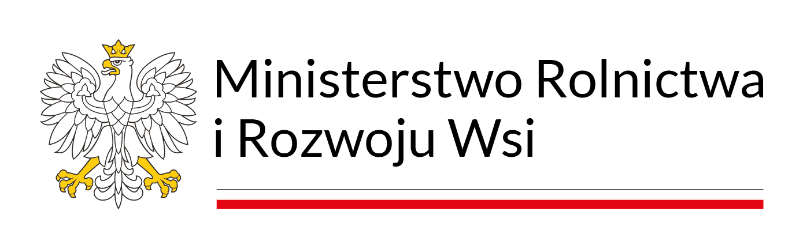
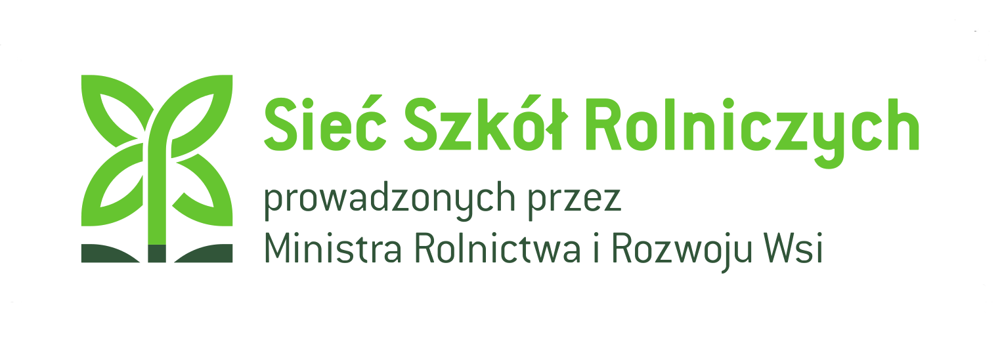

Dane identyfikacyjne
NIP: 000-000-00-00
REGON: 000000000
Organ prowadzący: Minister Rolnictwa i Rozwoju Wsi


Zespół Szkół Centrum Kształcenia Rolniczego
im. Szczepana Pieniążka w Swornegaciach
ul. Szkolna 1
89-608 Swornegacie
Polska
Telefon: 52 000 00 00
Fax: 52 000 00 01
E-mail:
sekretariat@zsckrswornegacie.pl
Sekretariat czynny w dni robocze w godzinach
7:30 – 15:30.
Internat – tel.: 52 000 00 10
Biblioteka – tel.: 52 000 00 15
NIP: 000-000-00-00
REGON: 000000000
Organ prowadzący: Minister Rolnictwa i Rozwoju Wsi